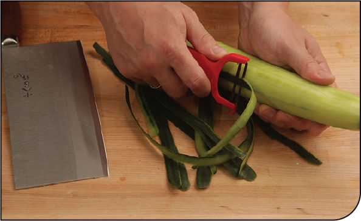
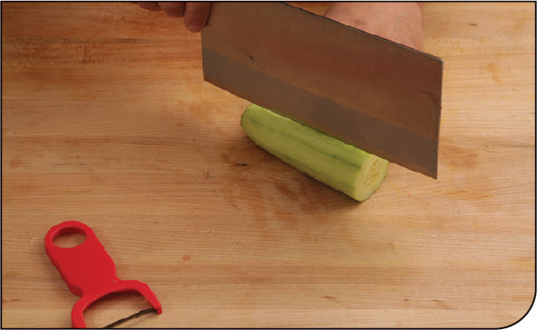
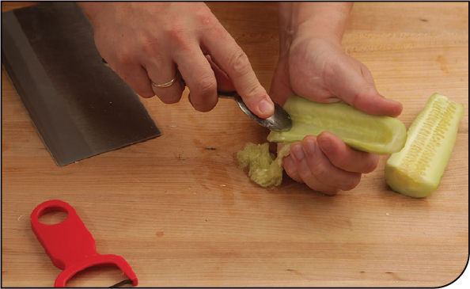
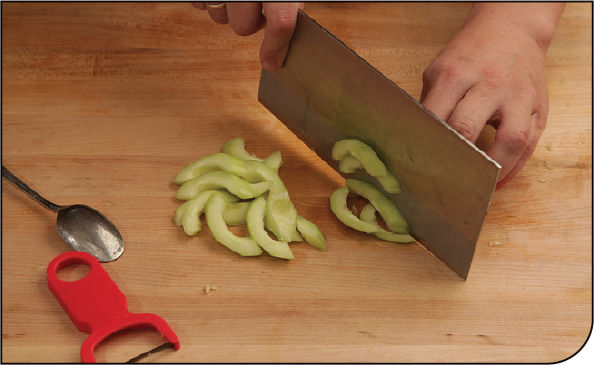
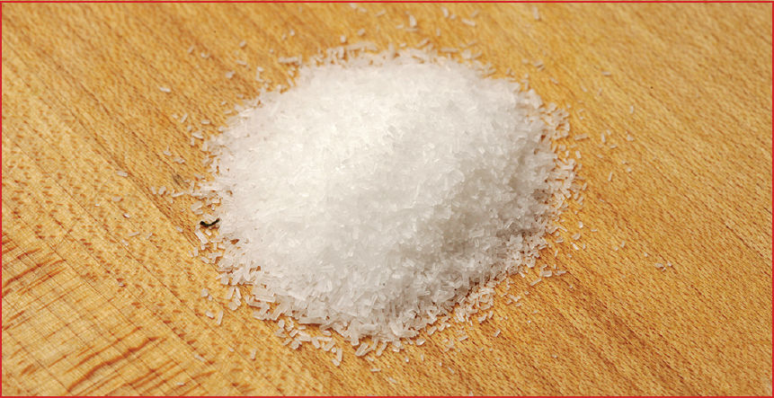
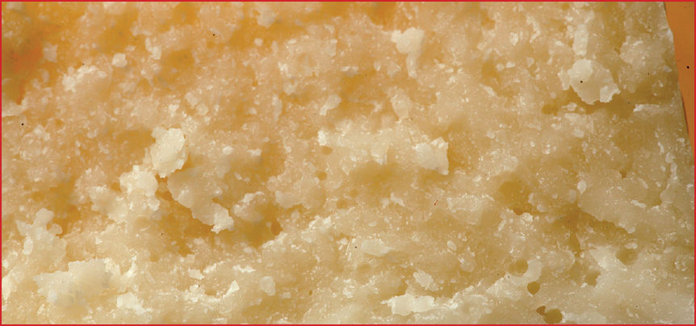

KNIFE SKILLS
How to Prepare Cucumbers for Stir-Fries
Cucumbers are one of the oldest cultivated vegetables, and a favorite for my daughter, Alicia, and me. They’re great smashed with garlic Sichuan style (here) or paired with a sweet-and-savory Honey Mustard–Miso Dip (here), but they’re also fantastic in stir-fries. While you can certainly simply slice whole cukes into salads, I typically peel and seed them, especially if I’m planning on stir-frying them, a process that can make the skins a little tougher and that doesn’t benefit from the watery seeds hitting the wok.
These days, even at my Western supermarket, I can find English, American, Kirby, Persian, and Japanese cucumbers. For stir-fries I typically stick with English or American. Persian and Japanese I reserve for salads or eating raw, while Kirbys are for pickling.
Step 1 • Peel the Cucumber

Use a vegetable peeler to peel the cucumber.
Step 2 • Halve Lengthwise

Trim the tops and bottoms off the cucumber, then halve the cucumber lengthwise.
Step 3 • Remove the Seeds

Cucumber seeds can make your stir-fry watery, so they should be scraped out with a spoon and discarded.
Step 4 • Slice

Slice the seeded cucumber halves into slivers on a bias.
The Truth about MSG

Chances are you’ve eaten some monosodium glutamate (MSG) within the last twenty-four hours. It’s in nearly all prepared foods, and the glutamate present in MSG is chemically identical to the glutamate naturally found in all kinds of foods ranging from Parmesan cheese to green peas to tomatoes. There’s no denying its transformative culinary power. In its pure crystalline form, MSG can be added to soups, stews, sauces, and stocks to add a rounded, savory flavor. Like regular table salt, MSG can also help boost our perception of other existing flavors. Tomato soup with a pinch of MSG tastes a little more tomatoey. Add a dash to beef stew to make it taste beefier. I, like my mother, and her mother before her, keep a small jar of it right next to the salt in my kitchen.
For some readers this may come as a surprise. I can hear you now: But Kenji, MSG is terrible for you! You’ll get migraines and asthma and numbness and seventeen other symptoms, each more horrid than the last!
For others, you may have the opposite reaction: Yesssssss, validation at last! MSG reactions are all in your head and all those studies have proven it. MSG headaches are imaginary!
Hold up. Because both of those reactions are out of line with reality. First let’s take a brief look at the history of MSG use, then let’s take a look at what those studies really have to say.
What Is MSG?
MSG is a sodium salt of glutamic acid (alpha-amino acid). It was first isolated in 1908 by Japanese biochemist Kikunae Ikeda, who was trying to discover exactly what gave dashi—the Japanese broth flavored with kombu (giant sea kelp)—its strong, savory character. Turns out that kombu is packed with glutamic acid. It was Ikeda who coined the term umami, which roughly translates as “savory,” to describe the taste of glutamic acid (and other, similar amino acids). Until that point, scientists had only discovered four flavors sensed by the tongue and soft palate: salty, sweet, sour, and bitter.
By 1909, pure crystalline MSG extracted from the abundant kelp in the sea around Japan was being sold under the brand name Aji-no-moto (roughly “element of flavor”). The company exists to this day, though with the current high demand for MSG, the chemical is synthesized rather than extracted. Pure MSG powder is available under a number of brand names (like Ac’cent), and glutamic-acid-rich ingredients are used extensively in packaged foods, typically in the form of autolyzed yeast extract or hydrolyzed soy protein. If the ingredients label lists either of those ingredients, there’s MSG in there. This was all well and good until the late 1960s.
The Myth of “Chinese Restaurant Syndrome”
The term Chinese Restaurant syndrome started getting thrown around in 1968 when a letter, written by a reader named Dr. Robert Ho Man Kwok, was published in the New England Journal of Medicine. In it, he speculated that the numbness and palpitations he experienced after eating in Chinese restaurants may be linked to the liberal use of powdered monosodium glutamate (MSG) in Chinese food. Though no actual evidence was presented, the idea took off and went viral (even before the Internet!), and for decades MSG was blamed for everything from migraines and numbness to bloat and heart palpitations. MSG phobia was born, and it exists to this day, though the racially tinged pejorative “Chinese restaurant syndrome” has since been swapped out for “MSG symptom complex.”
More recently, there’s been a wave of anti-anti-MSG backlash. Article after article claims that science has proven that MSG has no ill effects. These articles are as guilty of misrepresenting scientific data as those who spread the idea of Chinese restaurant syndrome in the first place. Let’s take a look at the actual science.
The Studies
A 1970 study by Dr. John Olney published in Nature found that injecting high doses of MSG under the skin of infant mice caused retinal damage, brain damage, and obesity as adults. We’re talking huge doses of MSG injected directly into babies here, a far cry from the small amounts ingested orally by humans. An April 2000 meta-study in the Journal of Nutrition found that in twenty-one studies of MSG conducted on primates, only two found links between oral consumption and neurotoxicity. Both of these studies were done by Olney’s laboratory, and nobody has been able to repeat those results since. Moreover, even in mice (the experimental species most sensitive to MSG), the oral dose of MSG required to produce brain lesions was 1 gram per kilogram of body weight, an absolutely massive amount the equivalent of a 170-pound person eating a third of a cup of pure MSG in a single sitting, with no food, on an empty stomach. This is about the amount of added MSG an average adult consumes in half a year.
Both the Federal Drug Administration (FDA) and the Federation of American Societies for Experimental Biology (FASEB) have done meta-studies on available experimental data. The conclusion was that while very large doses of MSG can both cause degenerative nerve cell damage and disrupt hormonal function in animal tests, there is no evidence to suggest any kind of long-term damage to humans in ordinary doses.
So far so good. Seems like the anti-anti-MSG folks are right. But what about short-term effects, i.e., MSG symptom complex? Surely not everyone who feels the short-term symptoms of consuming MSG can be hallucinating, can they? A 1993 study from the Journal of Food and Chemical Toxicology found that in a normal cross section of the healthy population there was little to no correspondence between MSG consumption and MSG Symptom Complex, especially when MSG consumption was paired with food. In fact, the effects were no greater than that of a placebo.
Doesn’t sound so good for the MSG haters.
But how about in people who specifically self-identify as being sensitive to MSG? Here the results are a little different. In a November 2000 study from the Journal of Allergy and Clinical Immunology, scientists administered increasing doses of MSG and a placebo to 130 adults who self-identified as MSG-sensitive. While responses to MSG were not completely consistent with repeated testing, testing subjects generally showed more reactions to actual MSG (38% of respondents) versus a placebo (13% of respondents).
The conclusion of the study was that MSG does, in fact, elicit adverse responses from a particularly sensitive subgroup of the population when administered in large doses (more than 3 g) on a mostly empty stomach. The existence of MSG symptom complex is concrete scientific fact.
Anecdotally, some members of my family and I experience MSG symptom complex effects, but not regularly. I cook with MSG several times a week, but experience adverse reactions only a few times per year. Most MSG-sensitive people experience similar rates of reaction, and it is, as yet, unclear what exact circumstances will elicit a reaction or whether those reactions are in fact attributable to MSG, MSG in concert with other ingredients, or an as-yet unidentified trigger. Human metabolism is extraordinarily complex. More studies are needed.
What about Glutamic Acid in Other Foods?

Kombu isn’t the only food rich in glutamic acid, though it may be the richest. Many commonly eaten foods are loaded with the stuff:
FOOD |
GLUTAMIC ACID CONTENT (mg/100 g) |
Kombu (giant sea kelp) |
22,000 |
Parmigiano-Reggiano |
12,000 |
Bonito |
2,850 |
Sardines/Anchovies |
2,800 |
Tomato Juice |
2,600 |
Tomatoes |
1,400 |
Pork |
1,220 |
Beef |
1,070 |
Chicken |
760 |
Mushrooms |
670 |
Soybeans |
660 |
Carrots |
330 |
According to the FDA, the average adult consumes about 13 grams of glutamate each day from natural sources, plus an additional .55 gram of added glutamate from MSG or other sources. This leads to an obvious question: Chemicals don’t really care what source they come from. Glutamate is glutamate, whether extracted from seaweed, synthesized in a lab, produced by the body, or consumed in your Parmesan cheese. So why aren’t folks sensitive to MSG also sensitive to glutamic-acid-rich foods? Why can my sister eat as much Parmesan cheese and as many anchovies as she wants?
It’s important to remember that in virtually every study, it was only when glutamic acid was consumed on a nearly empty stomach that adverse reactions manifested. When paired with enough food, symptoms virtually vanished.
My friend Jeffrey Steingarten, Vogue magazine’s longtime food correspondent, has suggested that the rash of people claiming MSG sensitivity in the seventies and eighties might be due to the fact that in those days many Chinese American restaurant meals started with a bowl of MSG-rich wonton soup consumed on an empty stomach before the rest of the meal. This hypothesis seems to fall in line with scientific data. Even though Parmesan cheese is packed with glutamic acid, it’s got plenty of other “stuff” in it too, and most likely you’re pairing that cheese with pasta or pizza.
Steingarten also rhetorically asked, why, if MSG is so bad, does everyone in China not walk around with a headache? This has become a popular refrain among Internet chat rooms and social media. However, it ignores several important factors: not everyone in China cooks with MSG, we don’t actually have data specific to China on self-reported MSG sensitivity, and most importantly, different populations have different reactions to foods. Lactose intolerance runs much higher in China than in the United States, so when someone in China claims to get a stomachache when drinking milk, “Is everyone in the U.S. walking around with a stomachache?” is not a relevant response.
If our relatively recent acceptance of gluten intolerance as a real problem that affects a good chunk of the population is any indication, we, as a species, are not very good at judging the varying ways in which ingredients interact with our systems.
Some have hypothesized that when it comes to Chinese restaurants specifically, MSG-rich broths consumed on an empty stomach may be part of the culprit, but there’s also a good possibility that some folks who claim sensitivity to MSG may in fact be experiencing reactions to other ingredients common in Chinese food but not so common in other restaurant cuisines, such as the peanut oil frequently used for stir-frying, the shellfish extracts used for flavoring, or herbs like cilantro. As far as I am aware, there is currently no scientific data that would elevate this hypothesis to theory.
One final note: whether you believe MSG sensitivity may exist or you believe that it is purely a placebo effect, there is never a legitimate reason to invalidate somebody’s reaction. If someone claims to be experiencing a negative reaction or feeling a certain way, believe it. At best, this may well be another piece of evidence to suggest that MSG sensitivity is a legitimate concern, and at worst, this person is experiencing a placebo effect. In either case, the feelings of discomfort are equally real and should be met with empathy.
So Should I Cook with It?
So where does that leave us in terms of using it for cooking? In the end, it seems that the subgroup sensitive to MSG is small enough and the adverse reaction rare enough that in all likelihood you’re gonna be just fine using it in your own food, especially if you make sure to eat a little MSG-free stuff to lay down a bed in your belly before getting to the goods. Moreover, all evidence suggests that the effects are at worst a short-term discomfort with no long-lasting consequences.
If you do, however, feel that you have a sensitivity to MSG, by all means avoid it! And you can tell those people who say “You’re just imagining it!” to buzz off. Your ally is science, and a powerful ally it is.